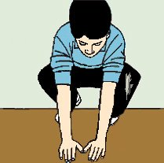
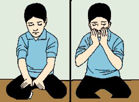
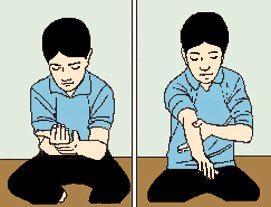

TEYEMMÜM
Hasta olup hastalýðý sebebiyle su kullanamayan, su zarar veren, su ile abdest alamýyacak durumda olan hastalar ve kitaplarda bildirildiði þekilde su arayýp da bulamayanlar teyemmüm ederek, cünüplükten kurtulur veya namaz kýlmak için teyemmüm eder. Þehirde her zaman su aramak farzdýr. Bunun için saðlam kimse þehirde teyemmüm yapamaz.
Teyemmüm, temiz toprak, kum, kireç ve taþ gibi toprak cinsinden temiz birþey ile edilir.
Teyemmüm, abdest
ve gusül için bir kolaylýktýr. Dînimizde, toprak ile teyemmüm de, su ile temizlenmek
gibidir.
Resimlerle teyemmüm:



Teyemmümün farzý üçtür:
1- Niyet etmek.
2- Ýki elin içini temiz topraða sürüp, yüzün tamamýný meshetmek.
3- Elleri temiz topraða vurup, önce sað ve sonra sol kolu mesh etmek.